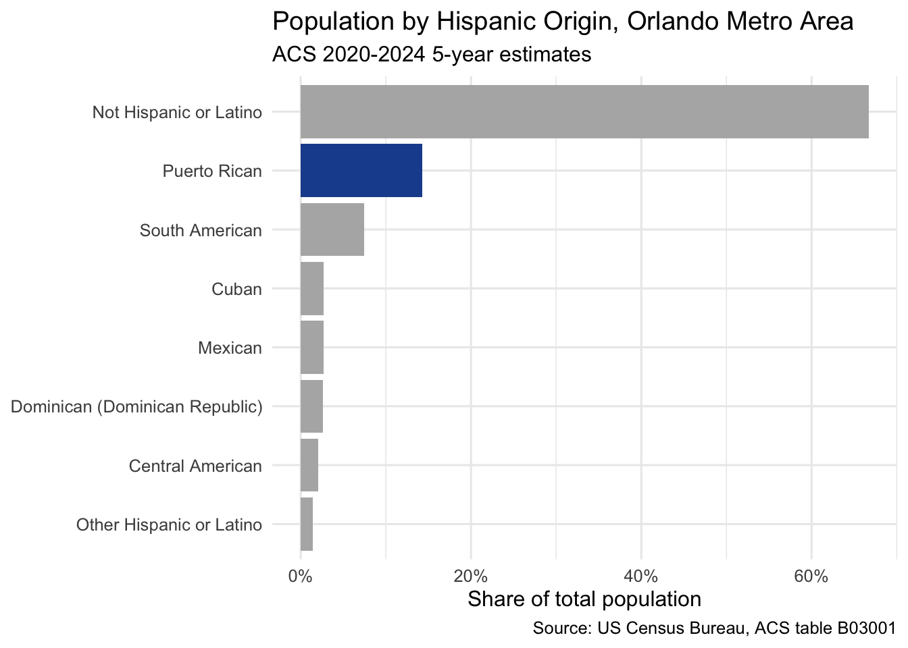
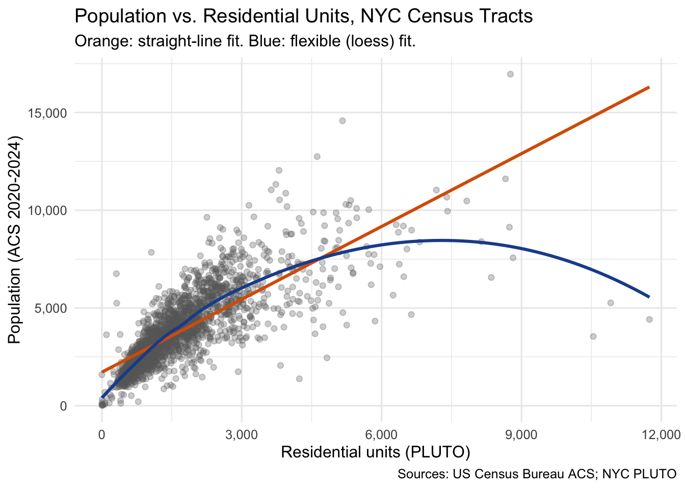
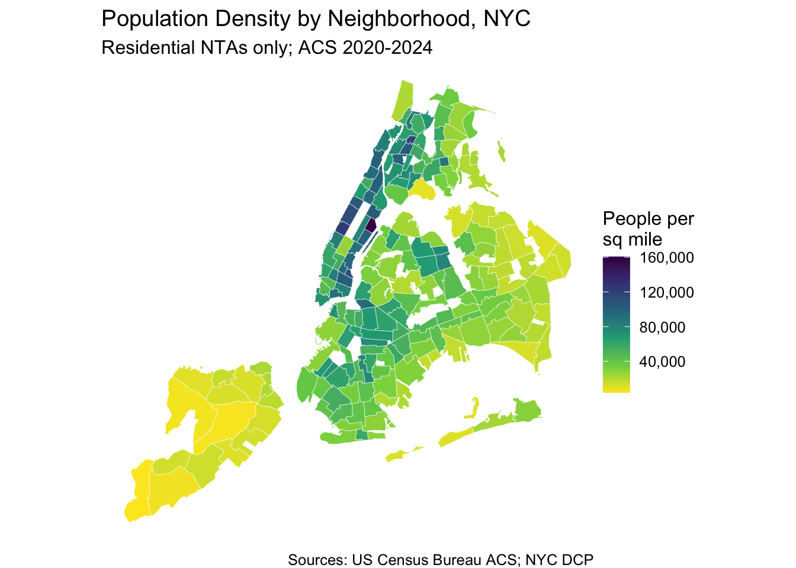
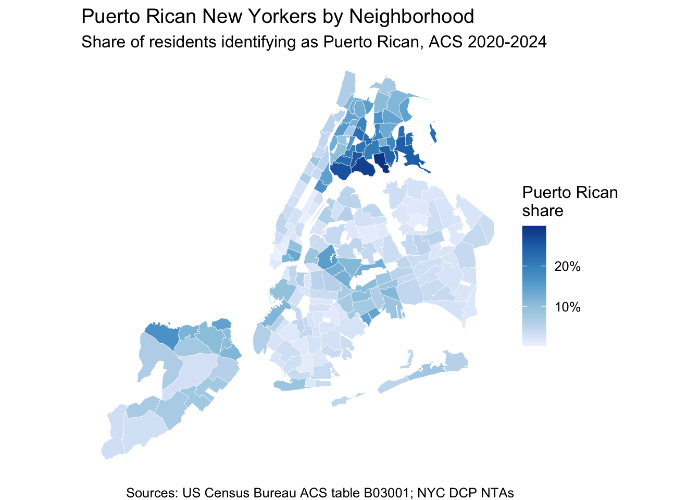
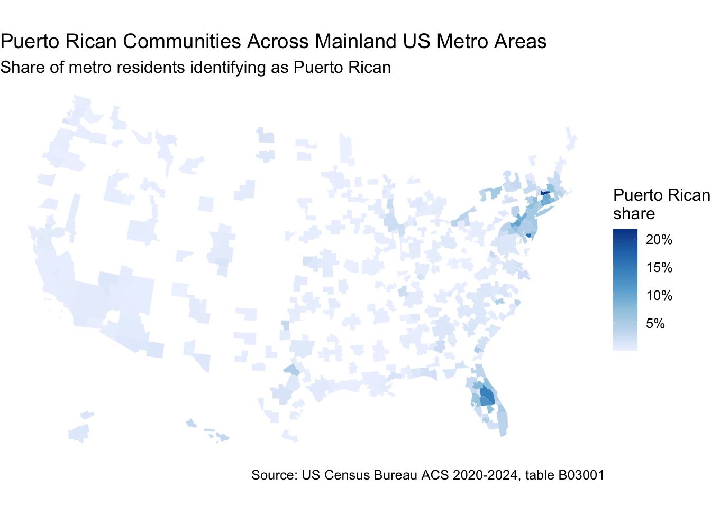

Show code
library(tidyverse)
library(tidycensus)
library(sf)
library(httr2)
library(gt)
library(scales)
# All cached data for this project lives here
dir.create("data/mp03", recursive = TRUE, showWarnings = FALSE)This report serves as an entry on Puerto Rican Americans for Welcomed by the New Colossus: An Atlas of American Communities. Using U.S. Census demographic estimates combined with New York City neighborhood and property-level building records, the analysis maps out where Puerto Rican communities are concentrated today. Readers will explore local housing patterns and neighborhood density across New York City’s five boroughs and compare major Puerto Rican population hubs across U.S. metro areas. Together, these local and national views trace how a community long centered in New York has evolved and spread across the mainland. The atlas takes its name from Emma Lazarus’s 1883 poem “The New Colossus”, which celebrates welcoming newcomers to New York Harbor—offering an interesting contrast with Puerto Ricans, who arrived not as foreign immigrants but as fellow U.S. citizens.
This project pulls from three main data sources: ACS, NTAs, and PLUTO. First, the U.S. Census Bureau’s American Community Survey (ACS) gathers nationwide demographic numbers every year, and using the 2020–2024 5-year estimates lets us get both the total population and the Puerto Rican population for every U.S. metro area and NYC census tract. Next, the NYC Department of City Planning’s Neighborhood Tabulation Areas (NTAs) map out 262 official neighborhoods, which lets us roll those census tracts up into recognizable local areas. Finally, the Department of City Planning’s Primary Land Use Tax Lot Output (PLUTO) database covers roughly 858,000 NYC tax lots, giving us property-level details like housing units, residential and office square footage, and building height. All of these data sets are saved locally so the code doesn’t have to re-download them every time it runs and the results stay consistent.
# Total and Puerto Rican population for every US metro area (CBSA)
cbsa_file <- "data/mp03/cbsa_pr.gpkg"
if (!file.exists(cbsa_file)) {
cbsa_raw <- get_acs(
geography = "cbsa",
variables = c(
total = "B01003_001",
puerto_rican = "B03001_005"
),
year = 2024,
survey = "acs5",
output = "wide",
geometry = TRUE
)
write_sf(cbsa_raw, cbsa_file)
}
cbsa <- read_sf(cbsa_file)# Total and Puerto Rican population for every NYC census tract
tract_file <- "data/mp03/nyc_tracts_pr.gpkg"
if (!file.exists(tract_file)) {
tract_raw <- get_acs(
geography = "tract",
variables = c(
total = "B01003_001",
puerto_rican = "B03001_005"
),
state = "NY",
county = c("New York","Kings","Bronx", "Queens", "Richmond"),
year = 2024,
survey = "acs5",
output = "wide",
geometry = TRUE
)
write_sf(tract_raw, tract_file)
}
nyc_tracts <- read_sf(tract_file)# Official DCP download link for the 2020 NTA shapefile
nta_url <- "https://s-media.nyc.gov/agencies/dcp/assets/files/zip/data-tools/bytes/nynta2020_26d.zip"
#' Download, unzip and read NYC 2020 Neighborhood Tabulation Areas
#' Downloads only if the zip is not already cached in `dir`.
load_nyc_nta <- function(url = nta_url, dir = "data/mp03") {
dir.create(dir, recursive = TRUE, showWarnings = FALSE)
zip_file <- file.path(dir, "nynta2020.zip")
shp_dir <- file.path(dir, "nynta2020")
if (!file.exists(zip_file)) {
download.file(url, zip_file, mode = "wb")
}
if (!dir.exists(shp_dir)) {
unzip(zip_file, exdir = shp_dir)
}
shp_path <- list.files(shp_dir, pattern = "\\.shp$",
recursive = TRUE, full.names = TRUE)[1]
read_sf(shp_path) |>
select(
nta_code = NTA2020,
nta_name = NTAName,
borough = BoroName,
nta_type = NTAType # 0 = residential; others = parks, airports, etc.
)
}
nyc_nta <- load_nyc_nta()Because Census tracts and New York City Neighborhood Tabulation Areas (NTAs) do not share a common lookup key in these datasets, a spatial join is necessary to match each tract’s boundary geometry to its surrounding neighborhood.
# Put tracts on the same map projection as the NTAs (NY State Plane, feet)
# and drop the few water-only tracts with empty shapes
nyc_tracts <- nyc_tracts |>
st_transform(st_crs(nyc_nta)) |>
filter(!st_is_empty(geom))
# Spatial join: each tract goes to the NTA it overlaps most
tract_nta <- st_join(nyc_tracts, nyc_nta,
join = st_intersects, largest = TRUE)
# Drop shapes, add up tract counts by NTA
nta_pop <- tract_nta |>
st_drop_geometry() |>
group_by(nta_code) |>
summarize(
total = sum(totalE, na.rm = TRUE),
puerto_rican = sum(puerto_ricanE, na.rm = TRUE),
n_tracts = n(),
.groups = "drop"
)
# Reconnect the totals to the NTA shapes
nyc_nta_pop <- nyc_nta |>
left_join(nta_pop, by = "nta_code") |>
mutate(
across(c(total, puerto_rican, n_tracts), \(x) replace_na(x, 0)),
pr_share = if_else(total > 0, puerto_rican / total, NA_real_),
area_sqmi = as.numeric(st_area(geometry)) / 27878400, # sq ft -> sq mi
density = total / area_sqmi
)Because the NYC Open Data Socrata API caps individual requests and PLUTO contains hundreds of thousands of tax lot records across the five boroughs, paging through the dataset in batches is required to retrieve the complete citywide file without timing out or truncating rows.
#' Download NYC PLUTO from the NYC Open Data SODA2 API, one page at a time,
#' and cache it as a CSV. Uses the cached copy if it already exists.
load_pluto <- function(
base_url = "https://data.cityofnewyork.us/resource/64uk-42ks.csv",
file = "data/mp03/pluto.csv",
page_size = 20000,
keep_cols = c("bbl", "borough", "bct2020", "unitsres", "resarea",
"officearea", "comarea", "bldgarea", "numfloors")) {
if (!file.exists(file)) {
pages <- list()
offset <- 0
repeat {
page <- request(base_url) |>
req_url_query(
`$select` = paste(keep_cols, collapse = ","),
`$order` = "bbl", # stable order so pages don't overlap
`$limit` = page_size,
`$offset` = offset
) |>
req_retry(max_tries = 5, backoff = \(i) 10) |> # wait + retry if server is busy
req_timeout(120) |>
req_perform() |>
resp_body_string() |>
I() |> # tell read_csv this is text, not a path
read_csv(col_types = cols(.default = col_character()))
pages[[length(pages) + 1]] <- page
message("Downloaded rows ", offset + 1, " to ", offset + nrow(page))
if (nrow(page) < page_size) break # last page
offset <- offset + page_size
}
bind_rows(pages) |> write_csv(file)
}
read_csv(file, col_types = cols(
bbl = col_character(), borough = col_character(),
bct2020 = col_character(), .default = col_double()
))
}
# PLUTO borough code -> census county FIPS
boro_fips <- c("1" = "061", "2" = "005", "3" = "047", "4" = "081", "5" = "085")
pluto <- load_pluto() |>
filter(!is.na(bct2020)) |>
mutate(
bct2020 = sprintf("%07d", as.integer(as.numeric(bct2020))),
GEOID = paste0("36", boro_fips[substr(bct2020, 1, 1)],
substr(bct2020, 2, 7))
)
# Building totals per census tract
pluto_tract <- pluto |>
group_by(GEOID) |>
summarize(
office_area = sum(replace_na(officearea, 0)),
res_units = sum(unitsres, na.rm = TRUE),
res_area = sum(resarea, na.rm = TRUE),
com_area = sum(comarea, na.rm = TRUE),
.groups = "drop"
)
# One table with tract population, NTA and buildings
tracts_full <- tract_nta |>
st_drop_geometry() |>
select(GEOID, tract_name = NAME, total = totalE,
puerto_rican = puerto_ricanE, nta_code, nta_name, borough) |>
left_join(pluto_tract, by = "GEOID")The next section works through ten exploratory questions using the Census, neighborhood, and tax lot datasets loaded above. Together, these questions examine New York City’s built environment—including office space, housing units, residential density, and building height—alongside national settlement patterns for Puerto Rican Americans across U.S. metro areas. Along the way, a few data quality issues surfaced across the datasets, so those outliers and recording errors were filtered out to keep the results accurate.
tracts_full |>
slice_max(office_area, n = 5) |>
select(tract_name, nta_name, office_area) |>
gt() |>
tab_header(title = "NYC Census Tracts with the Most Office Space") |>
cols_label(tract_name = "Census Tract", nta_name = "Neighborhood",
office_area = "Office Floor Area (sq ft)") |>
fmt_number(office_area, decimals = 0)| NYC Census Tracts with the Most Office Space | ||
| Census Tract | Neighborhood | Office Floor Area (sq ft) |
|---|---|---|
| Census Tract 9; New York County; New York | Financial District-Battery Park City | 17,396,739 |
| Census Tract 13; New York County; New York | Financial District-Battery Park City | 16,889,181 |
| Census Tract 113; New York County; New York | Midtown-Times Square | 15,679,979 |
| Census Tract 94; New York County; New York | Midtown-Times Square | 15,433,200 |
| Census Tract 7; New York County; New York | Financial District-Battery Park City | 14,790,091 |
The Financial District and Midtown have the most office space of any NYC neighborhoods. At the tract level, Census Tract 9 in the Financial District has 17.4 million square feet of office space, the most of any single tract in the city.
Upper East Side-Lenox Hill-Roosevelt Island in Manhattan has 60,305 residential units, more than any other neighborhood in NYC.
density_tbl <- tracts_full |>
# Need real housing stock: tracts with very few units are usually
# "group quarters" (jails, dorms, nursing homes), not dense housing
filter(total >= 100, res_units >= 50, res_area > 0) |>
mutate(per_1000_sqft = total / res_area * 1000,
per_unit = total / res_units) |>
# PLUTO assigns each lot to a single tract, so huge developments that span
# several tracts (e.g., Co-op City) leave neighboring tracts with people but
# almost no units on paper. Drop these implausible mismatches.
filter(per_unit <= 6)
top_by_area <- density_tbl |> slice_max(per_1000_sqft, n = 5) |>
mutate(measure = "Per 1,000 sq ft of residential space")
top_by_unit <- density_tbl |> slice_max(per_unit, n = 5) |>
mutate(measure = "Per residential unit")
bind_rows(top_by_area, top_by_unit) |>
select(measure, tract_name, nta_name, total, per_1000_sqft, per_unit) |>
gt(groupname_col = "measure") |>
tab_header(title = "Densest NYC Census Tracts, Two Ways",
subtitle = "Tracts with 100+ residents, 50+ housing units, and at most 6 people per unit") |>
cols_label(tract_name = "Census Tract", nta_name = "Neighborhood",
total = "Population", per_1000_sqft = "People per 1,000 sq ft",
per_unit = "People per Unit") |>
fmt_number(total, decimals = 0) |>
fmt_number(c(per_1000_sqft, per_unit), decimals = 2)| Densest NYC Census Tracts, Two Ways | ||||
| Tracts with 100+ residents, 50+ housing units, and at most 6 people per unit | ||||
| Census Tract | Neighborhood | Population | People per 1,000 sq ft | People per Unit |
|---|---|---|---|---|
| Per 1,000 sq ft of residential space | ||||
| Census Tract 29.01; New York County; New York | Tribeca-Civic Center | 562 | 9.90 | 3.09 |
| Census Tract 397; Bronx County; New York | Belmont | 4,219 | 6.74 | 5.33 |
| Census Tract 85; Queens County; New York | Queensbridge-Ravenswood-Dutch Kills | 1,821 | 6.05 | 3.30 |
| Census Tract 27; Richmond County; New York | Tompkinsville-Stapleton-Clifton-Fox Hills | 2,627 | 5.78 | 5.39 |
| Census Tract 411; Queens County; New York | Corona | 4,250 | 5.69 | 4.76 |
| Per residential unit | ||||
| Census Tract 27; Richmond County; New York | Tompkinsville-Stapleton-Clifton-Fox Hills | 2,627 | 5.78 | 5.39 |
| Census Tract 522; Queens County; New York | St. Albans | 2,233 | 4.26 | 5.37 |
| Census Tract 537; Kings County; New York | South Williamsburg | 4,803 | 4.15 | 5.34 |
| Census Tract 397; Bronx County; New York | Belmont | 4,219 | 6.74 | 5.33 |
| Census Tract 114; Queens County; New York | Ozone Park (North) | 1,908 | 5.55 | 5.01 |
Changing the metric from square footage to people per unit shifts almost the entire top list, with only Census Tract 397 in the Bronx and Census Tract 27 in Staten Island showing up in both. That gap comes down to building layout, since an area with lots of small apartments gives a different result than one with a few large homes. On the first pass, I had to filter out bad numbers from Co-op City and what looks like a jail facility, and the remaining top per-unit tracts still sit right under the 6-person-per-unit cap, likely because tax lots do not always line up cleanly with census borders.
# Mainland metro areas only: drop the NYC metro (35620) and metros on the
# island of Puerto Rico, plus micropolitan (small-town) areas
mainland_metros <- cbsa |>
st_drop_geometry() |>
filter(str_detect(NAME, "Metro Area"),
!str_detect(NAME, ", PR "),
GEOID != "35620") |>
mutate(pr_share = puerto_ricanE / totalE)
top5_metros <- mainland_metros |> slice_max(pr_share, n = 5)
top5_metros |>
select(NAME, totalE, puerto_ricanE, pr_share) |>
gt() |>
tab_header(title = "Mainland Metro Areas with the Largest Puerto Rican Share",
subtitle = "Excluding the NYC metro area and metros in Puerto Rico") |>
cols_label(NAME = "Metro Area", totalE = "Total Population",
puerto_ricanE = "Puerto Rican Population", pr_share = "Share") |>
fmt_number(c(totalE, puerto_ricanE), decimals = 0) |>
fmt_percent(pr_share, decimals = 1) |>
data_color(pr_share, palette = "Blues")| Mainland Metro Areas with the Largest Puerto Rican Share | |||
| Excluding the NYC metro area and metros in Puerto Rico | |||
| Metro Area | Total Population | Puerto Rican Population | Share |
|---|---|---|---|
| Springfield, MA Metro Area | 462,815 | 100,672 | 21.8% |
| Vineland, NJ Metro Area | 153,305 | 24,561 | 16.0% |
| Orlando-Kissimmee-Sanford, FL Metro Area | 2,793,746 | 399,412 | 14.3% |
| Lakeland-Winter Haven, FL Metro Area | 790,694 | 95,449 | 12.1% |
| Waterbury-Shelton, CT Metro Area | 454,969 | 49,037 | 10.8% |
Springfield, MA ranks first with the highest share at 21.8%. Looking at the rest of the list, the metros where Puerto Ricans make up the biggest part of the population outside of New York City fall into two East Coast clusters: the Northeast (Springfield, Vineland, Waterbury) and Central Florida (Orlando, Lakeland). Metros on the island of Puerto Rico were excluded from this table so the focus stays strictly on mainland communities.
# Full Hispanic-origin table (B03001) for every metro, cached
origin_file <- "data/mp03/cbsa_b03001.csv"
if (!file.exists(origin_file)) {
get_acs(geography = "cbsa", table = "B03001",
year = 2024, survey = "acs5") |>
write_csv(origin_file)
}
origins <- read_csv(origin_file, show_col_types = FALSE)
# Variable labels for B03001, cached
label_file <- "data/mp03/b03001_labels.csv"
if (!file.exists(label_file)) {
load_variables(2024, "acs5") |>
filter(str_starts(name, "B03001_")) |>
select(name, label) |>
write_csv(label_file)
}
labels <- read_csv(label_file, show_col_types = FALSE) |>
mutate(depth = str_count(label, "!!"),
group = str_remove_all(word(label, -1, sep = "!!"), ":"))
# Not Hispanic (depth 2) + the main Hispanic origin groups (depth 3)
city_name <- "Orlando-Kissimmee-Sanford, FL Metro Area"
city_mix <- origins |>
filter(NAME == city_name) |>
inner_join(labels, by = c("variable" = "name")) |>
filter(depth == 3 | group == "Not Hispanic or Latino") |>
mutate(share = estimate / sum(estimate),
group = fct_reorder(group, share))
ggplot(city_mix, aes(x = share, y = group,
fill = group == "Puerto Rican")) +
geom_col(show.legend = FALSE) +
scale_x_continuous(labels = label_percent()) +
scale_fill_manual(values = c("grey70", "#1f4e9c")) +
labs(title = "Population by Hispanic Origin, Orlando Metro Area",
subtitle = "ACS 2020-2024 5-year estimates",
x = "Share of total population", y = NULL,
caption = "Source: US Census Bureau, ACS table B03001") +
theme_minimal(base_size = 12)
About one-third of the Orlando metro area is Hispanic or Latino, while the remaining two-thirds is not. Looking at the overall metro population, Puerto Ricans make up 14.3%—roughly double the next largest Hispanic group, South Americans at 7.4%, with Cubans (2.7%), Mexicans (2.7%), Dominicans (2.6%), and Central Americans (2.1%) trailing much further behind. This stands out because nationally, Mexican Americans are the largest Hispanic group, whereas Orlando is heavily anchored by its Puerto Rican community.
us_file <- "data/mp03/us_pr.csv"
if (!file.exists(us_file)) {
get_acs(geography = "us",
variables = c(total = "B01003_001", puerto_rican = "B03001_005"),
year = 2024, survey = "acs5", output = "wide") |>
write_csv(us_file)
}
us_pr <- read_csv(us_file, show_col_types = FALSE)
us_pr_total <- us_pr$puerto_ricanE
nyc_metro <- cbsa |> st_drop_geometry() |> filter(GEOID == "35620")
nyc_share <- nyc_metro$puerto_ricanE / us_pr_total
mainland_metros |>
mutate(share_of_us = puerto_ricanE / us_pr_total) |>
slice_max(share_of_us, n = 8) |>
select(NAME, puerto_ricanE, share_of_us) |>
gt() |>
tab_header(title = "Share of All Stateside Puerto Ricans, by Metro Area",
subtitle = "Top metros outside New York") |>
cols_label(NAME = "Metro Area", puerto_ricanE = "Puerto Rican Population",
share_of_us = "Share of US Total") |>
fmt_number(puerto_ricanE, decimals = 0) |>
fmt_percent(share_of_us, decimals = 1)| Share of All Stateside Puerto Ricans, by Metro Area | ||
| Top metros outside New York | ||
| Metro Area | Puerto Rican Population | Share of US Total |
|---|---|---|
| Orlando-Kissimmee-Sanford, FL Metro Area | 399,412 | 6.7% |
| Philadelphia-Camden-Wilmington, PA-NJ-DE-MD Metro Area | 285,299 | 4.8% |
| Miami-Fort Lauderdale-West Palm Beach, FL Metro Area | 224,306 | 3.8% |
| Chicago-Naperville-Elgin, IL-IN Metro Area | 207,529 | 3.5% |
| Tampa-St. Petersburg-Clearwater, FL Metro Area | 205,150 | 3.4% |
| Boston-Cambridge-Newton, MA-NH Metro Area | 129,188 | 2.2% |
| Hartford-West Hartford-East Hartford, CT Metro Area | 112,347 | 1.9% |
| Springfield, MA Metro Area | 100,672 | 1.7% |
Out of the 5,965,360 Puerto Ricans living across the 50 states and D.C., the New York City metro area still holds the largest share at 18.1% (about 1.08 million people). Behind NYC, the next largest shares are in Orlando (6.7%), Philadelphia (4.8%), Miami (3.8%), Chicago (3.5%), and Tampa (3.4%), putting three Florida metros inside the top five outside of New York. Even so, combining NYC with the next eight largest metros accounts for only around 46% of the stateside population, meaning more than half live spread out across the rest of the country.
tracts_full |>
filter(total > 0, res_units > 0) |>
ggplot(aes(x = res_units, y = total)) +
geom_point(alpha = 0.3, color = "grey40") +
geom_smooth(method = "lm", se = FALSE, color = "#d95f02") +
geom_smooth(method = "loess", se = FALSE, color = "#1f4e9c") +
scale_x_continuous(labels = label_comma()) +
scale_y_continuous(labels = label_comma()) +
labs(title = "Population vs. Residential Units, NYC Census Tracts",
subtitle = "Orange: straight-line fit. Blue: flexible (loess) fit.",
x = "Residential units (PLUTO)", y = "Population (ACS 2020-2024)",
caption = "Sources: US Census Bureau ACS; NYC PLUTO") +
theme_minimal(base_size = 12)
q7_data <- tracts_full |> filter(total > 0, res_units > 0)
q7_cor <- cor(q7_data$total, q7_data$res_units)
q7_data |>
mutate(unit_band = cut(res_units,
breaks = c(0, 500, 1500, 3000, 6000, Inf),
labels = c("Under 500", "500-1,500", "1,500-3,000",
"3,000-6,000", "6,000+"),
right = FALSE)) |>
group_by(unit_band) |>
summarize(n_tracts = n(),
median_per_unit = median(total / res_units),
.groups = "drop") |>
gt() |>
tab_header(title = "People per Unit Falls as Tracts Get More Housing",
subtitle = paste0("Correlation between population and units: ",
round(q7_cor, 2))) |>
cols_label(unit_band = "Housing Units in Tract", n_tracts = "Tracts",
median_per_unit = "Median People per Unit") |>
fmt_number(median_per_unit, decimals = 1)| People per Unit Falls as Tracts Get More Housing | ||
| Correlation between population and units: 0.77 | ||
| Housing Units in Tract | Tracts | Median People per Unit |
|---|---|---|
| Under 500 | 118 | 3.3 |
| 500-1,500 | 1085 | 2.7 |
| 1,500-3,000 | 802 | 2.3 |
| 3,000-6,000 | 192 | 1.7 |
| 6,000+ | 23 | 1.2 |
Population and housing units have a strong positive correlation of 0.77, meaning tracts with more housing generally have more people, though the relationship is not a straight line. On the scatter plot, the blue trend line flattens out at the higher end and pulls away from the straight orange line because household size shrinks as unit counts grow—dropping from a median of 3.3 people per unit in tracts with under 500 units down to 1.2 in tracts with over 6,000 units. This likely reflects differences in housing types across the city, where dense high-rise tracts tend to have smaller studios and one-bedrooms occupied by singles or couples, while lower-unit tracts in the outer boroughs contain more multi-person family homes.
pluto |>
select(-borough) |> # PLUTO's own borough code; use the NTA borough name instead
left_join(tracts_full |> select(GEOID, nta_name, borough), by = "GEOID") |>
# NYC's tallest building (One WTC) has 104 floors; higher values are
# data-entry errors in PLUTO
filter(!is.na(nta_name), !is.na(numfloors), numfloors <= 104) |>
group_by(nta_name, borough) |>
summarize(max_floors = max(numfloors),
n_20plus = sum(numfloors >= 20),
.groups = "drop") |>
slice_max(max_floors, n = 10, with_ties = FALSE) |>
gt() |>
tab_header(title = "NYC Neighborhoods with the Tallest Buildings",
subtitle = "Measured by number of floors (PLUTO)") |>
cols_label(nta_name = "Neighborhood", borough = "Borough",
max_floors = "Tallest Building (floors)",
n_20plus = "Buildings 20+ Floors") |>
fmt_number(c(max_floors, n_20plus), decimals = 0)| NYC Neighborhoods with the Tallest Buildings | |||
| Measured by number of floors (PLUTO) | |||
| Neighborhood | Borough | Tallest Building (floors) | Buildings 20+ Floors |
|---|---|---|---|
| Financial District-Battery Park City | Manhattan | 104 | 182 |
| Midtown South-Flatiron-Union Square | Manhattan | 102 | 112 |
| Midtown-Times Square | Manhattan | 98 | 360 |
| East Midtown-Turtle Bay | Manhattan | 77 | 161 |
| Downtown Brooklyn-DUMBO-Boerum Hill | Brooklyn | 74 | 55 |
| Chinatown-Two Bridges | Manhattan | 72 | 10 |
| Chelsea-Hudson Yards | Manhattan | 71 | 84 |
| Tribeca-Civic Center | Manhattan | 70 | 35 |
| Long Island City-Hunters Point | Queens | 69 | 45 |
| Queensbridge-Ravenswood-Dutch Kills | Queens | 64 | 8 |
Financial District–Battery Park City holds the tallest building in the city at 104 floors (One World Trade Center), along with 182 buildings that reach 20 floors or higher. While Financial District takes the top height, Midtown–Times Square has the largest overall concentration of high-rises with 360 buildings of 20 or more floors (topping out at 98 floors). Manhattan dominates the top rankings with seven of the ten tallest neighborhood peaks, leaving Downtown Brooklyn–DUMBO (74 floors), Long Island City–Hunters Point in Queens (69 floors), and Queensbridge–Ravenswood–Dutch Kills in Queens (64 floors) as the three outer-borough exceptions. During the initial check, PLUTO listed a 343-floor building in Borough Park, Brooklyn—a clear data-entry error—so I capped the dataset at 104 floors to keep the results accurate.
ggplot(nyc_nta_pop |> filter(nta_type == 0)) +
geom_sf(aes(fill = density), color = "white", linewidth = 0.1) +
scale_fill_viridis_c(labels = label_comma(), name = "People per\nsq mile",
direction = -1) + # dark = dense, light = sparse
labs(title = "Population Density by Neighborhood, NYC",
subtitle = "Residential NTAs only; ACS 2020-2024",
caption = "Sources: US Census Bureau ACS; NYC DCP") +
theme_void(base_size = 12)
nyc_nta_pop |>
st_drop_geometry() |>
filter(nta_type == 0) |>
arrange(desc(density)) |>
slice(c(1:5, (n() - 4):n())) |>
mutate(group = rep(c("Most dense", "Least dense"), each = 5)) |>
select(group, nta_name, borough, density) |>
gt(groupname_col = "group") |>
tab_header(title = "NYC's Most and Least Dense Neighborhoods",
subtitle = "Residents per square mile, residential NTAs") |>
cols_label(nta_name = "Neighborhood", borough = "Borough",
density = "People per sq mile") |>
fmt_number(density, decimals = 0)| NYC's Most and Least Dense Neighborhoods | ||
| Residents per square mile, residential NTAs | ||
| Neighborhood | Borough | People per sq mile |
|---|---|---|
| Most dense | ||
| Upper East Side-Yorkville | Manhattan | 160,486 |
| Upper West Side-Lincoln Square | Manhattan | 123,372 |
| Fordham Heights | Bronx | 116,602 |
| Upper West Side (Central) | Manhattan | 110,976 |
| Stuyvesant Town-Peter Cooper Village | Manhattan | 110,202 |
| Least dense | ||
| Hunts Point | Bronx | 8,802 |
| Annadale-Huguenot-Prince's Bay-Woodrow | Staten Island | 6,514 |
| New Springville-Willowbrook-Bulls Head-Travis | Staten Island | 5,672 |
| Todt Hill-Emerson Hill-Lighthouse Hill-Manor Heights | Staten Island | 5,074 |
| Tottenville-Charleston | Staten Island | 3,832 |
Looking at the neighborhood density map, the darkest shading is concentrated in Manhattan and parts of the Bronx, while Staten Island and eastern Queens appear much lighter. Manhattan’s high-rise neighborhoods dominate the top of the list—led by Upper East Side–Yorkville (~160,500 people per square mile), Upper West Side–Lincoln Square (~123,400), Upper West Side (Central) (~111,000), and Stuyvesant Town–Peter Cooper Village (~110,200)—with Fordham Heights in the Bronx (~116,600) standing out as the only non-Manhattan neighborhood in the top five likely because of its dense apartment blocks. At the opposite end, suburban Staten Island neighborhoods make up four of the five least dense areas—Tottenville–Charleston (~3,800), Todt Hill–Emerson Hill (~5,100), New Springville (~5,700), and Annadale–Huguenot (~6,500)—creating roughly a 40-fold gap from top to bottom. Hunts Point in the Bronx (~8,800) is the main exception on the low end, likely because much of the neighborhood is zoned for industrial use and houses a major food distribution center, leaving far fewer residential buildings per square mile.
# "Primarily commercial" = commercial floor area is more than half of the
# tract's commercial + residential floor area
commercial <- tracts_full |>
filter(com_area + res_area > 0) |>
mutate(com_share = com_area / (com_area + res_area),
primarily_commercial = com_share > 0.5)
pop_commercial <- sum(commercial$total[commercial$primarily_commercial], na.rm = TRUE)
n_tracts_comm <- sum(commercial$primarily_commercial)
share_pop_commerc <- pop_commercial / sum(commercial$total, na.rm = TRUE)
# Puerto Rican residents of primarily commercial tracts
pr_commercial <- sum(commercial$puerto_rican[commercial$primarily_commercial], na.rm = TRUE)
pr_share_commer <- pr_commercial / sum(commercial$puerto_rican, na.rm = TRUE)
commercial |>
filter(primarily_commercial) |>
group_by(borough) |>
summarize(n_tracts = n(),
residents = sum(total, na.rm = TRUE),
puerto_rican = sum(puerto_rican, na.rm = TRUE),
.groups = "drop") |>
arrange(desc(residents)) |>
gt() |>
tab_header(title = "Residents of Primarily Commercial Tracts, by Borough",
subtitle = "Commercial floor space > 50% of commercial + residential") |>
cols_label(borough = "Borough", n_tracts = "Tracts",
residents = "Residents", puerto_rican = "Puerto Rican Residents") |>
fmt_number(c(residents, puerto_rican), decimals = 0)| Residents of Primarily Commercial Tracts, by Borough | |||
| Commercial floor space > 50% of commercial + residential | |||
| Borough | Tracts | Residents | Puerto Rican Residents |
|---|---|---|---|
| Manhattan | 84 | 272,336 | 9,886 |
| Brooklyn | 78 | 136,946 | 7,746 |
| Queens | 91 | 136,214 | 7,255 |
| Bronx | 45 | 81,715 | 11,046 |
| Staten Island | 13 | 19,964 | 1,155 |
For this question, I defined a “primarily commercial” tract as one where commercial floor space makes up more than 50% of combined commercial and residential square footage, which serves as a straightforward majority cutoff for commercial dominance. Across NYC, 311 tracts meet that threshold, accounting for roughly 647,175 residents, or 7.6% of the city’s total population (including about 37,000 Puerto Ricans, or 6.4% of the city’s Puerto Rican population). Manhattan accounts for the largest share by far with around 272,000 residents living in these areas, followed by Brooklyn (~137,000), Queens (~136,000), the Bronx (~82,000), and Staten Island (~20,000).
ggplot(nyc_nta_pop |> filter(nta_type == 0)) +
geom_sf(aes(fill = pr_share), color = "white", linewidth = 0.1) +
scale_fill_distiller(palette = "Blues", direction = 1,
labels = label_percent(), name = "Puerto Rican\nshare") +
labs(title = "Puerto Rican New Yorkers by Neighborhood",
subtitle = "Share of residents identifying as Puerto Rican, ACS 2020-2024",
caption = "Sources: US Census Bureau ACS table B03001; NYC DCP NTAs") +
theme_void(base_size = 12)
ggplot(cbsa |>
filter(str_detect(NAME, "Metro Area"), !str_detect(NAME, ", PR ")) |>
mutate(pr_share = puerto_ricanE / totalE) |>
tigris::shift_geometry()) +
geom_sf(aes(fill = pr_share), color = NA) +
scale_fill_distiller(palette = "Blues", direction = 1,
labels = label_percent(), name = "Puerto Rican\nshare") +
labs(title = "Puerto Rican Communities Across Mainland US Metro Areas",
subtitle = "Share of metro residents identifying as Puerto Rican",
caption = "Source: US Census Bureau ACS 2020-2024, table B03001") +
theme_void(base_size = 12)
borough_pr <- nyc_tracts |>
st_drop_geometry() |>
mutate(borough = case_when(
str_detect(NAME, "Bronx County") ~ "Bronx",
str_detect(NAME, "Kings County") ~ "Brooklyn",
str_detect(NAME, "Queens County") ~ "Queens",
str_detect(NAME, "New York County") ~ "Manhattan",
str_detect(NAME, "Richmond County") ~ "Staten Island"
)) |>
group_by(borough) |>
summarize(total = sum(totalE, na.rm = TRUE),
puerto_rican = sum(puerto_ricanE, na.rm = TRUE),
.groups = "drop") |>
mutate(share_of_borough = puerto_rican / total,
share_of_nyc_pr = puerto_rican / sum(puerto_rican)) |>
arrange(desc(puerto_rican))
borough_pr |>
gt() |>
tab_header(title = "Puerto Rican New Yorkers by Borough",
subtitle = paste0("NYC total: ", comma(sum(borough_pr$puerto_rican)),
" Puerto Rican residents (",
percent(sum(borough_pr$puerto_rican) /
sum(borough_pr$total), 0.1),
" of the city)")) |>
cols_label(borough = "Borough", total = "Total Population",
puerto_rican = "Puerto Rican Residents",
share_of_borough = "Share of Borough",
share_of_nyc_pr = "Share of NYC's Puerto Ricans") |>
fmt_number(c(total, puerto_rican), decimals = 0) |>
fmt_percent(c(share_of_borough, share_of_nyc_pr), decimals = 1) |>
data_color(share_of_borough, palette = "Blues")| Puerto Rican New Yorkers by Borough | ||||
| NYC total: 581,101 Puerto Rican residents (6.8% of the city) | ||||
| Borough | Total Population | Puerto Rican Residents | Share of Borough | Share of NYC's Puerto Ricans |
|---|---|---|---|---|
| Bronx | 1,404,779 | 229,525 | 16.3% | 39.5% |
| Brooklyn | 2,631,580 | 132,727 | 5.0% | 22.8% |
| Queens | 2,323,052 | 94,805 | 4.1% | 16.3% |
| Manhattan | 1,629,477 | 83,665 | 5.1% | 14.4% |
| Staten Island | 494,956 | 40,379 | 8.2% | 6.9% |
Puerto Ricans have a different migration story than most other Hispanic groups in the United States because they arrive as citizens, not immigrants. When Congress passed the Jones Act in 1917, it granted U.S. citizenship to Puerto Ricans living on the island as well as everyone born there afterward, meaning people could move freely to the mainland without visas or immigration restrictions (Encyclopedia.com / HistoryRise). Over the next few decades, economic shifts pushed many families to make that move, especially during Operation Bootstrap when the island transitioned from farming to factory work and overall job availability declined (Lehman College).
With cheaper air travel opening up in the 1940s and 1950s, New York City became the primary destination of “The Great Migration,” with roughly 85% of Puerto Rican migrants settling in the city (Digital Public Library of America) and pushing its Puerto Rican population from 70,000 to nearly 900,000 by the mid-1960s (History.com). According to the 2020–2024 ACS data, New York City is now home to 581,101 Puerto Ricans, or 6.8% of the city’s total population. As the NYC map above shows, that community is heavily anchored in the Bronx, where 229,525 residents account for 39.5% of all Puerto Ricans in the city and 16.3% of the borough itself—while Staten Island surprisingly holds the second-highest borough share at 8.2% (40,379 residents), ahead of Manhattan (5.1%), Brooklyn (5.0%), and Queens (4.1%).
Since the mid-2000s, the center of the Puerto Rican diaspora has steadily shifted south toward Florida, with New York seeing a net loss of Puerto Rican residents to other states between 2005 and 2013 while Florida gained ground (Pew Research Center). That trend continued after Hurricane Maria hit the island in 2017, when an estimated 30,000 to 50,000 Puerto Ricans relocated to Florida in the storm’s aftermath (University of Florida BEBR). As the U.S. map shows, Orlando has emerged as the main hub of this growth—now home to roughly 399,000 Puerto Ricans, who make up 14.3% of the metro population and 6.7% of all stateside Puerto Ricans—even as long-established Northeast hubs like Philadelphia (4.8% of the stateside total) and Springfield, MA (which leads the mainland in concentration at 21.8%) remain major anchors.
Even though the New York City metro area still holds the largest single community at 18.1% of all stateside Puerto Ricans, more than half now live outside the top nine metro areas, showing how far the diaspora has spread. For anyone using this atlas to explore Puerto Rican culture, that history is visible from historic neighborhoods in the Bronx all the way to newer hubs like Orlando. On a personal level, these migration waves reflect my own family story—I am Puerto Rican and Dominican, raised mostly on my Puerto Rican side after my grandmother and mother moved here from the island in the 1960s in search of better opportunities when my mom was a teenager.
Even though the Puerto Rican diaspora has spread well beyond New York to hubs like Orlando, Philadelphia, and Springfield, the New York City metro area still remains the largest single home at 18.1% of the stateside population, with the Bronx serving as its local heart (39.5% of NYC Puerto Ricans). On the technical side, combining property-level building records with census boundaries showed how easily spatial mismatches and data-entry errors can skew neighborhood metrics if outliers are not checked carefully. It is also worth noting that these figures rely on American Community Survey estimates and self-reported ancestry, which carry standard survey margins of error. Taken together, the local and national views capture both the deep roots of New York’s Puerto Rican community and its ongoing growth across the mainland.
AI assistance (Claude) was used as a coding assistant and draft reviewer throughout this project. On the technical side, I completed the fill-in-the-blank exercises for Tasks 1 and 2, while Claude generated the R code for Tasks 3 through 7—including the NTA download function, spatial joins, PLUTO data retrieval, EDA tables, plots, maps, and the borough summary table—and helped debug errors (such as 503 API retries, missing packages, and column conflicts) while flagging data anomalies like Co-op City, the jail tract, and the 343-floor building outlier. I chose the focus on Puerto Rican communities, while Claude proposed excluding island metros, setting the 50% commercial floor-space cutoff, and applying the outlier filters (50+ units, ≤6 people per unit, and ≤104 floors), which I reviewed and approved. For the written report, Claude compiled data and historical source fact sheets and reviewed my drafts to point out logic, accuracy, or grammar issues without rewriting them, while I wrote all of the prose and made every revision myself—including the introduction, data sources, EDA answers, atlas entry, and conclusion—before Claude inserted my finished text word for word into the Quarto document (with only three minor formatting adjustments: italicizing the atlas title, replacing my typed “0.77” with inline R code displaying the same figure, and swapping placeholder URLs in the first atlas paragraph for the verified source links).